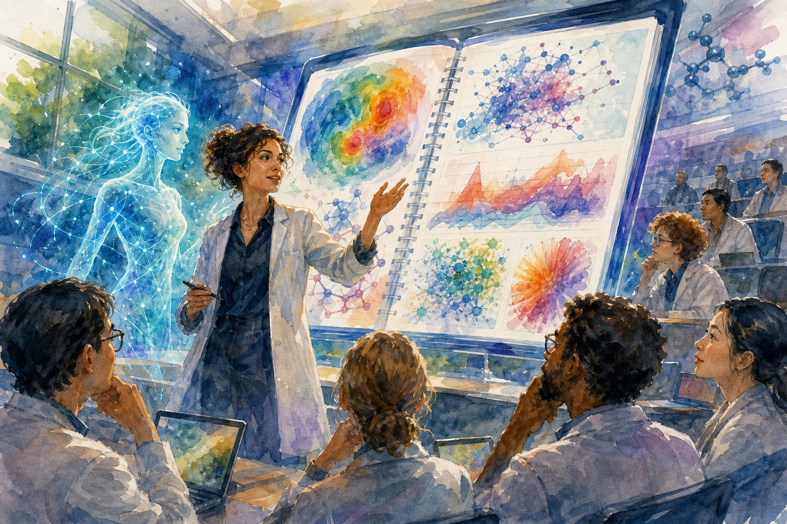
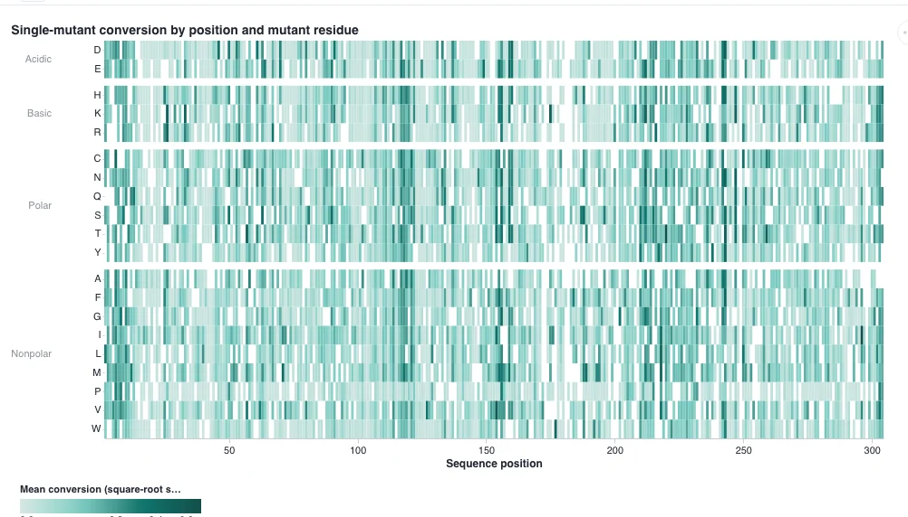
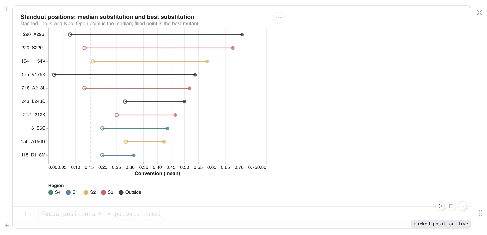
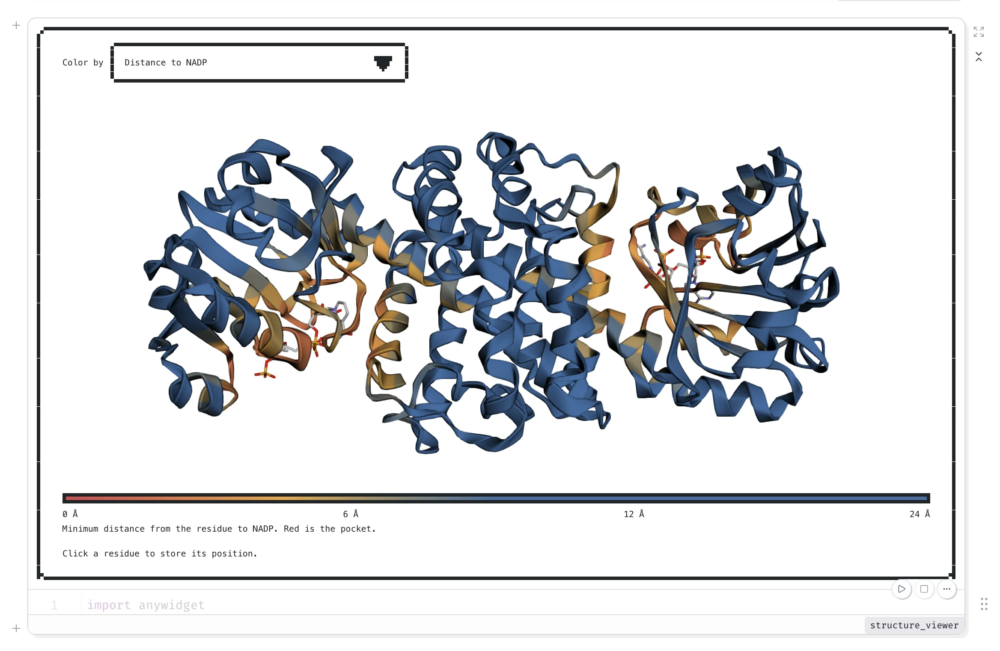
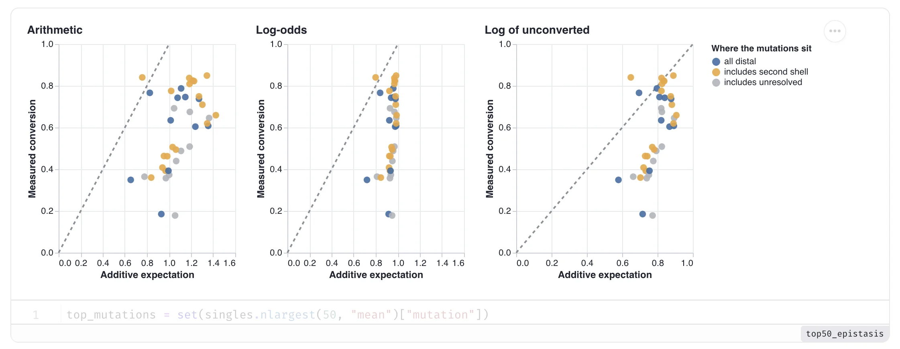
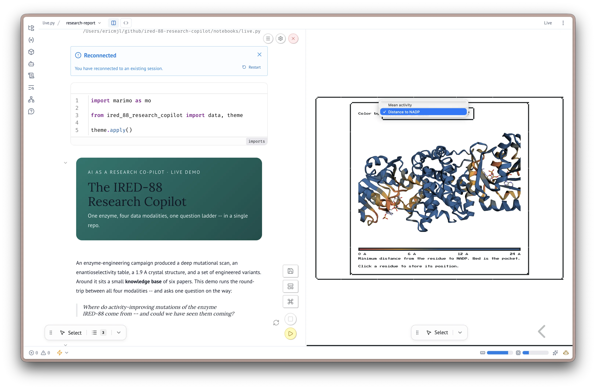

Eric J Ma's Website
written by Eric J. Ma on 2026-10-14 | tags: marimo notebooks coding agents bioinformatics epistasis enzymes research data science structure live demo

In this post, I recount live-demoing an hour-long reanalysis of my published IRED-88 enzyme data at UMass Chan, pairing a coding agent with a reactive marimo notebook. New tools marimo Lens and Studio let me point at plots and project slides straight from the notebook. The agent flew through charts but stumbled on the epistasis transform I knew from hard-won experience. It's a candid look at data science in the age of agents. When machines master the obvious moves, how do we cultivate the judgment that remains ours?
1:00 pm. "ok, awesome, clear the notebook of any code + commentary cells, we want to return it to the state where there are just hints."
1:02 pm. "clear out the slide deck too."
1:03 pm. "clear out the HTML report as well."
1:06 pm. "commit everything except for live.py please."
That was me on October 2, an hour before standing up in a lecture hall at UMass Chan Medical School. My friend Alper Kucukural, who leads the bioinformatics core there, had invited me to teach the third session of their AI bioinformatics bootcamp. I had spent the whole morning building the demo through Cursor: data loaded, deep-dive notes written, homolog structures compared, slide decks generated, iterated through multiple rounds of review. Then, while the first speaker, John Damask, wrapped up his session on building personal knowledge bases with coding agents, I asked the agent to tear my own work down. Everything went into git. Only one file stayed dirty: live.py, the notebook we were going to witness being created in real-time.
Why did I decide at the last minute to tear the notebook all down? It was because marimo's launch week had just happened, and the marimo team announced marimo Lens and marimo Studio. Having watched Vincent Warmerdam's demo of them online, I was so excited that I decided, the day of the talk, to fold both of them in. The morning's work was exactly that: new tooling going into a live talk days after it shipped. Took a bit of guts, but it paid off!
The IRED-88 demo
I took the stage after the break. The subject was IRED-88, an imine reductase I helped engineer during my Novartis days; my colleagues and I published that campaign in ACS Catalysis in 2021, and I wrote a post about it back then. The repo I built for the demo, ired-88-research-copilot, holds the paper's deep mutational scan covering 4,720 single mutants, doubles and triples of the best ones, a 1.9 angstrom crystal structure (PDB 7OG3), a small knowledge base of six papers, and my own curation on top of all of it. The demo had one driving question: where do activity-improving mutations of this enzyme come from, and could we have seen them coming?
In front of everyone, I dictated the first live prompt: "start a marimo server for me, we are going to do an analysis of the IRED88 dataset." Two minutes later, after I pasted the pair invitation into Cursor, the agent sent a toast into the notebook: ready to pair on IRED-88. The identical ritual had run that morning, which the audience didn't know. The mechanics were rehearsed, but the analysis was not.
John asked why marimo. Part of the answer is a post I wrote last year: marimo notebooks are fully reactive, so changing one cell re-runs everything downstream of it, and each notebook carries its own dependencies in-file. The rest of the answer is scar tissue: I once carried a stale output into a meeting, and though I caught it only hours beforehand, it still caused me a lot of anxiety. Stale cells lie, and I don't want to be duped by my own notebook.
The way agents connect to marimo notebooks is the pair-with-agent feature, called marimo pair. The agent reaches into the notebook's process directly: it writes code into cells, reads your variables, and executes them while you watch. On the day, the agent was Cursor driving Grok 4.7. Talk-to-your-data used to be a chat app off to the side. Now it's an agent you have connected to a notebook you run. I dictated most of my prompts that hour. Everything below is verbatim from the session transcript, stumbles included. The stumbles are the point: I was talking to the machine the way I talk to a colleague.
The heat map
With the pairing live, the analysis could start. First, I loaded the deep mutational scan data, specifically to display the conversion percentage. Along the way I shared a convention baked into this repo's AGENTS.md: every agent-written code cell gets sandwiched between two markdown cells, one explaining what's about to happen, one recording what we observed, so the notebook stays readable for the next human, including future me. Then, I proceeded to prompt a heatmap into existence:
Now I want you to create for me a heat map that visualizes the deep mutational scan activity data. Plot the mean column as value, x-axis as position, y-axis is mutant letter. On the y-axis, I also want you to group the amino acids by biochemical property. So, and and then within each group I want them to be ordered alphabetically. Between groups, there should be a bit of a white space gap so that it's easy for us to visualize. And they should, that white space gap should be subtle and it should not look like an actual height of one of the heat map heat map cells so that we can distinguish it from the rest of the heat map. Our goal is to visualize the activity values as described by the mean column, and so that we can like try to see what kind of visual patterns are present.
When I know exactly what I want, I specify it exactly. "Obviously, I rehearsed this one," I admitted a few minutes later.

While the chart rendered, I asked for water and Alper, on the side, cheekily chimed in, "Murphy's law, when will it show up?"
The audience joined the analysis
The heat map was still rendering when someone asked, "How much of this do you trust?" My response to the question was this: you can't review every line an agent writes, and an experienced scientist can smell when something looks off in the data. I've caught agents because a dataset came out sparser than I knew it should be. Manuel Garber, a faculty member at UMass Chan, shared his perspective: you have exploration mode and you have paper mode. Agents change the speed. The redundancy and the rigor are still yours.
Then I invited the audience to participate. I asked people to point at regions of the heat map that looked interesting, and the positions came back: maybe 110 to 120, something near 150, the 200-plus region. With marimo Lens I drew a box around each answer, right on the notebook, and marimo turned the scribbles into annotations S1 through S4. Someone asked, "Why didn't you just ask the tool what was important?" Because I want to look with my own eyes. Otherwise, I might miss things, and I want to see them. We have to do both: look, and compute.

Then I turned to the agent and dictated, verbatim:
So with Marimo lens annotations S1 through S4, I think we identified some positions that could be potentially interesting. I want you to do a bit of a deep dive onto those positions. Not every single one of them. I was a little bit coarse-grained with the annotations. Basically I just want to see what what the top performing positions are and maybe with a little bit of focus on the positions that I kind of highlighted over there.
Notice how loose that ask is compared to the heat map prompt. I was riffing, and the annotations carried the precision for me. The agent took some liberty: it kept the strongest position in each Lens box, plus the strongest positions outside the boxes, and ranked the set by the best mutant's activity, with the wild type as a dashed line, the median as an open dot, and the best mutant as a filled dot.

Then, someone asked about the cost of running this agent. My answer was this: On my $60/mo Cursor sub, the most I've usually used is ~2B tokens (depending on model usage). We've only used ~30K thus far.
From sequence to structure
With the cost question settled, I turned our attention to the structural biology angle:
I'd like you to look for the cell down below in which we ask to in which we what we want to do is we want to like show a 3D viewer of the structure of iRED 88, the PDB structure ID is 7OG3 letter O, not zero, seven O G3. What I want you to use is 3D mold.js behind the scenes so that we have native JavaScript. And I want you to wrap it inside in any widget so we can potentially add interactivity later as for example to click on a residue and get that information out as a variable in Python. One of the things that I want you to do is I want you to give me a drop-down box that allows me to visualize a few things. One is the mean activity on the surface of the the ribbon cartoon of the protein structure. the second one that I want is distance to the catalytic pocket. So there is an NADPH molecule that is in that is inside the structure. I want you to give, I want you to have a second view where we can color the residue by its distance to the catalytic pocket. and we'll start with that first because I can't remember what the third one is.
I knew to steer AI to use 3DMol.js from prior experience searching for tools and tech online. Without that experience, that detail would have been challenging to specify. I also knew the exact PDB structure and could specify it exactly, which potentially cut down on tokens spent searching for the correct structure. I was quite prescriptive and exact in describing the ways I wanted the ribbon structure to be colored, and that was intentional too. Specifying that level of detail matters: the more precisely you describe what you want, the closer the first render lands to the analysis in your head.
Somewhere in there, the agent also opened Chrome on its own. "It's gonna do something for me. I'm not sure what it is yet," I said. And when the structure rendered with only one chain colored, I intercepted: "One little correction, I want you to color both chains, please. Don't just color one chain."

The demo's first scientific payoff came when I flipped between the two dropdown colorings. The positions that tolerate, and even benefit from, mutation are nowhere near the catalytic pocket; none of the top 50 singles sits within 6 angstroms of the NADP. They're distal, allosteric sites. Someone with decades of enzymology might have said "dude, that's obvious." Coming from training in biological engineering, I found it delightful, and it surfaced live, just by flipping between two dropdowns.
The epistasis analysis
With the structure story told, we moved on to the combining-mutations question. This part, unlike the heat map prompt, had no rehearsal behind it: "I didn't prepare to talk about this, but I haven't actually rehearsed this session at all yet. So we're going to see this live," I said. I knew the cheat existed: inject the answer, and you guarantee a clean ending. "If I cheat and inject this in now, we're gonna be able to finish the demo. If I don't cheat, there's a risk that we might not, and I'm gonna take that risk. By the way, it's 3:14, so happy pi o'clock!" Then I dictated the prompt, verbatim:
All right. we're gonna skip to the additive versus epistatic section. one of the things that we've kind of known from enzyme catalysis is that if you mutate the active site of the enzyme, it's potentially that you'll get epistasis. But most of it might be negative epistasis, right? But we also kind of want to see whether positive epistasis might happen. But I'm also not sure what happens if we take advantage of the data that lives in sites that are distal to the active site, right? What do you call those? Allosteric sites, right? So if we think about the allosteric sites, maybe that's a different story. So one of the things that I want you to try to look at is because we have double and triple mutational data, I want you to take the top 50 performing single-point mutations, and I want you to come up with different ways of looking at those numbers to see whether we get negative or positive epistasis or simple additivity. Now because I've published the paper and the paper is actually in the knowledge base, you are not allowed to look at the papers that are in the knowledge base. Or anything that cites it.
The agent's first attempt added conversion percentages arithmetically, which produced expected conversions above 100%. Conversion is a percentage, and nothing converts more than fully, so that answer was visibly wrong. Its second attempt was log-odds additivity, summing gains on the logit scale. Those predictions stayed between zero and one, which made them look plausible, and they turned out to be wrong too. I put the failure on the projector anyway. "I know the correct answer. I know I did it wrong. AI was wrong here, and that's great. I need people to see this."

So I stepped in and dictated this, verbatim:
the math for doing additive calculation, whether it's correct or not, is actually done a different way. it's in the paper. I'm going from memory, so I want you to fact check me so you can look at the paper now. the idea is you take one minus the conversion, and then you logit transform that, and then you do the math and you convert back to expected activity. And so that's what I want you to do, and show that as a third plot in addition to the two plots that you gave me, which were actually incorrect. The other context you need to know is that the value from 0 to 1 represents percentage conversion. So that first plot, in which you have values, additive expectation going beyond 100% was completely wrong. You just need to note that, you don't need to fix the plot, we need to show the wrong work so that we have that as a record for the future.
That third attempt didn't work either. Is this what I remember? It's not, and I said so in front of everyone. Murphy's law reared its ugly head. The agent had the data the entire time, and the paper sat in its knowledge base too. It never produced the right transform on its own, and even with me steering, three tries came up empty. The obvious moves are what these models are trained on, so the obvious moves are also where they'll take you. Getting to the right transform took me weeks of wrangling the data and looking at it through different mathematical transforms in 2021, precisely because it was counterintuitive. For me, the lesson from this demo was clear. If we have a deep conviction that something is sitting in the data, it really behooves us to sit down, work two or three small examples by hand, and only then hand the verified method to the agent to generalize across the rest. It writes that code faster than I ever could. The conviction and the verification are mine.
Alper told a war story of his own right after: Claude kept applying one logarithm where the paper's math meant another, and a second model got it right. Sometimes you have to sit down with pen and paper.
Four minutes left
That unscripted detour had cost us time. I looked at the clock and called it: four minutes left, two things still running. The epistasis story stayed honest, and the remaining time went to the knowledge base. I dictated a scramble: S220 and A296 were the two strongest single mutants in the campaign, so search the literature for anyone who has studied them, check the knowledge base for homolog papers, fold a homolog with ESMFold, overlay it on IRED-88, highlight both positions. The knowledge base did real work at that point: the literature, structure prediction, and the DMS table all pointed at two positions.
Rebuilding the slides in Studio
The knowledge base was the second thread. The third was marimo Studio, which ran underneath everything else. I dictated: "I recently just created a research report view and I hate what I'm seeing. Absolutely hate it." The agent rebuilt it to spec. It gave me three slides with minimal text: the heat map, verbatim from the notebook; the standout positions figure; and the structure viewer, "so that I can live narrate when I'm presenting exactly which positions we should be focusing our energies on for the next round campaign."

Exploring and presenting are two different kinds of work, and historically the bridge between them was copy-paste, which is how decks went stale. With Studio, the deck is a projection of the notebook, so it can't quietly drift out of date. I get to explore in one artifact and present from the same source. And yes, that's the NES.css theme in the deck, Mario cursor included. Have a little bit of fun while you do this stuff. 🙂
Lessons
The tooling now lets a coding agent work as a true pair-coding partner in scientific data analysis. That pairing is marimo pair and marimo Lens working together. Pair connects the agent to the notebook's live process, so it writes into the same cells I'm looking at. Lens lets me draw a box around anything on screen and hand that region to the agent with a note attached. Before Lens, giving the agent a region meant describing it in words and hoping. When the audience shouted out positions and I boxed them, the deep-dive chart that came back was built from that shared pointing.
Your expertise and your conviction still matter, maybe more than ever. The epistasis question made that visceral. I couldn't prompt-and-pray my way to the answer: the agent added percentages and predicted impossible conversions, then tried log-odds and missed again. Even when I let it cheat, unlocking the paper so it could check my math, it never produced the right transform on its own. What carried the analysis was what I brought to it: the conviction that the answer was sitting in the data, the knowledge that conversion can't exceed 100%, and the habit of working two or three small cases by hand before handing the verified method to the agent to generalize.
We can, and should, adjust how we use agents to amplify what we're doing. A year ago I would have told you there was one right way to work with an agent, but the demo changed my mind. In exploration mode, while I'm still feeling out a problem, I use the agent loosely: riff, sketch, let the Lens annotations carry the precision I haven't spelled out. In paper mode (a term I'm happy to credit to Manuel Garber), or anywhere the stakes rise, I apply a much higher degree of critical observation and feedback to shape the output exactly as I want it. The agent and the data are the same in both modes, and I get to choose how much I steer.
I'm planning to record a video walkthrough of this demo, and I'll link it here when it ships. And if you take one thing from the hour, it's this: agents will speed you up, and they will still get your science wrong in exactly the places where your judgment is the point.
Cite this blog post:
@article{
ericmjl-2026-live-demoing-data-science-in-the-age-of-agents,
author = {Eric J. Ma},
title = {Live-demoing data science in the age of agents},
year = {2026},
month = {10},
day = {14},
howpublished = {\url{https://ericmjl.github.io}},
journal = {Eric J. Ma's Blog},
url = {https://ericmjl.github.io/blog/2026/10/14/live-demoing-data-science-in-the-age-of-agents},
}
I send out a newsletter with tips and tools for data scientists. Come check it out at Substack.
# TODO(eric): learn how to learn anything. feb 2027.
If you would like to sponsor the coffee that goes into making my posts, please consider GitHub Sponsors!